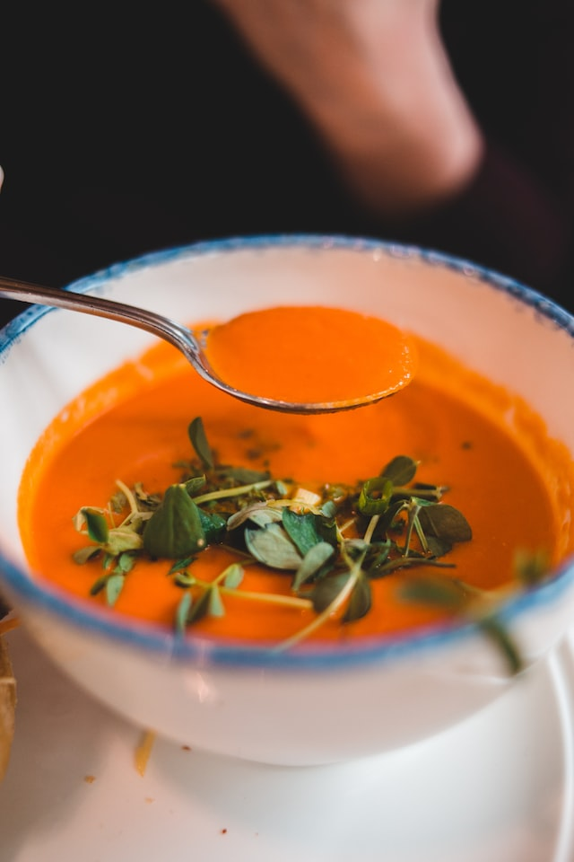

-

Tomato Soup
- 4
- 45 mins
-

Curry Pumpkin Soup
- 8
- 20 mins
-

Mushroom Soup
- 4
- 30 mins
-

Fennel Soup
- 4
- 1 h
-

Broccoli Soup
- 4
- 35 mins
-

French Onion Soup
- 4
- 55 mins
-
Green Velvet Soup
- 8
- 1 h 30 mins
-

Carrot Soup
- 4
- 30 mins
-
Cheese Soup
- 6
- 30 mins